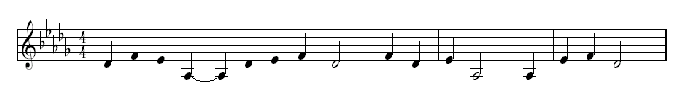

|
Packages Used
MIDI-Perl and MIDI::Simple: |
What Music is Perl?--Larry Wall, TPJ #1
MIDI (Musical Instrument Digital Interface), is a standard for representing music as series of notes, rather than as raw audio data. MIDI is to raw audio (.au/.wav/.aiff) as vector graphics (PostScript) is to bitmaps (.png/.gif).
With MIDI, you can make music without actually having to perform waveform synthesis, the same way that PostScript lets you draw circles without having to worry about trigonometry. For the purposes of this article, MIDI represents music as a series of events--where each event is basically "turn a note on or off." These events happen at certain times, on a certain channel (what others call a "voice" or "track"), with a certain note number, at a certain volume. Most any computer with a sound card can play MIDI files.
When I first started reading the MIDI internals, it seemed an ideal format for composing music in Perl, and so I set out to make routines for encoding to and decoding from the binary format used in MIDI files. In August 1998, I sent to CPAN my first release of the imaginatively named "MIDI-Perl", a mostly object-oriented interface to these encoding/decoding routines (Burke 1998).
However, as I stood back from the pile of code, I realized that while I had created a fine object model for representing MIDI files, the most basic data structure, the MIDI event, was no more suited to musical composition than raw PostScript is for composing architectural blueprints.
Imagine you need to examine a series of addresses and save any located in the U.S. to a file. You might do that with a program like this:
open US, ">us.txt" or die "Can't write to us.txt!";
while (<DATA>) {
next if /^\s*\#/s;
chomp;
my ($address, $url, $country) = split(/\s+/, $_, 3);
next unless $country =~ /^U\.?S\.?/i;
print US "$address: $url\n";
}
__END__
# List of addresses, in the format:
# Address URL Country
foo@bar.org http://bar.org U.S.
staff@tpj.com http://tpj.com USA
# We'll want to ignore this one:
pati@lebar.fr http://www.lebar.fr France
This program basically implements a language, and then has, after its __END__, "instructions" in that language. Now, the language is simple: lines are ignored if they start with optional whitespace and then a # sign. If a line can be split into three non-null fields, it's considered an instruction to save the first two fields, but only if the last field begins with US or U.S. or us. This language doesn't have anything like what we'd expect in a real programming language--it has no flow-control structures, no variables, no ability to define procedures. But it is a language in the sense that it has a syntax (an order things have to be in to make sense) and semantics (what the elements in the language mean).
Now, the semantics here are quite restricted, so it's a language only in the same sense that a simple markup language like HTML is a language, or the way that the notation for recording chess moves is a language, or the way that common music notation is a language. None of these are languages you could write a program to calculate 5 * 12 in, but each has its purpose.
None of these languages makes hard things possible. For example, if you wanted to represent the behavior "save the output of an address if today is Tuesday", you'd be out of luck. You could change the program so that it would work, but then it would be a different language.
Now, there are two ways to make a language more flexible. You can make a novel language, or an extensional language.
And so I found myself in the not-entirely-anticipated position of designing and implementing a language that would provide an interface for musical composition, a language that would use MIDI for output but be several levels higher in abstraction.
Now, it is the work of language designers to make their languages so that they will--to quote Larry Wall--"make easy things easy, and hard things possible." What's implied is that there are two domains that a programming language bridges--the way we think of a problem, and the way we code up the program that solves the problem. Making "hard things possible" is a matter of making the language open-ended enough that one can do just about anything with it, while making "easy things easy" is a matter of making sure that simple ideas can be coded concisely.
In this article I'll first explain my ideas about types of simple languages, and then from that I'll show how these ideas led me to design the MIDI::Simple language the way I did. My goal is not so much to document MIDI::Simple, but instead to illustrate how specific problems in language design led me to make MIDI::Simple the way it is. Readers whose interests do not include both language theory and music can skip sections as they wish.
A Novel Language is what we have already: a language independent of whatever you implement it in. Here, we've implemented our language in Perl, but none of Perl's power is available to it. Now, if you want the language to do more, you could write it so that it has flow control, like Perl's if statements and while loops. If you've never done anything like this before, it seems quite daunting--and it is! (Well, not too daunting, or else there wouldn't be so many programming languages around. Think of all the early-80s BASICs written in machine language and fitting in a few kilobytes of ROM.)
Now, this is not to say that implementing just any high-level language in Perl is trivial--not by a long shot--but implementing a language with simple syntax and simple semantics, like a LOGO dialect, or even a simple Lisp dialect (as in Abelson & Sussman 1996), is quite doable. Or, you could create an extensional language.
An Extensional Language is what I call a language that is really an extension of Perl, provided as subroutines in a Perl library, module, or class. Now, it may strike you as arrogant to say that Perl plus five subroutines from require "my_great_lib.pl" constitutes a new language. First off, I didn't say it was an entirely new language. Second, it does what you want, and that's probably all you're interested in, right? The advantage to using an Extensional Language is that you're still in Perl, so you get to use all of its features--variables, flow control, and so on. The disadvantage is that you have to work within the confines of Perl syntax. However, Perl syntax is so free-form that this is not a problem.
There's a parallel here in the creation of jargons: Chemists, when they needed a language to talk about chemical structures with precision, could have decided to make up a whole new rich Novel Language, with verb tenses and noun compounding and and all the goodies we expect in a natural language. But that would mean figuring out the best way to implement predicate argument structure and pronoun binding and phonology and all the other cruft of natural language--the same way that making a Java virtual machine in Perl means having to implement exception handling.
Instead, chemists implemented chemical names as an Extensional Language based on English. Now, "boron trifluoride" isn't exactly core English, but it's more English than it is Thai or Klingon; and, I admit, when the chemical "extension" to English starts spawning forms like "dichloro-1,2-ethane" and "2-chloro-4-ethylamino-6-isopropylamino-1,3,5-triazine", it begins to leave every natural language behind. But when a chemist says "boron trifluoride is an inorganic gas", you understand that something is an inorganic gas, even if you can't picture what a boron trifluoride molecule looks like. Similarly, if you're reading Perl code and you see &funk_it, or $this->thingify, you probably can't guess what funk_it() or thingify() do, but at least you can tell they're subroutines.
Consider these MIDI events, expressed as they would be sent to the MIDI encoder in MIDI::Event:
# event, wait-time, channel, note number, volume ['note_on', 0, 1, 25, 96], ['note_off', 96, 1, 25, 0], ['note_on', 0, 1, 29, 96], ['note_off', 96, 1, 29, 0], ['note_on', 0, 1, 27, 96], ['note_off', 96, 1, 27, 0], ['note_on', 0, 1, 20, 96], ['note_off', 192, 1, 20, 0],
...and so on, for a total of thirty-three such lines. I won't explain the exact details of this format, as it's not relevant to the rest of this article, but obviously requiring a composer to write notes like this is not making easy things easy. A more intuitive formulation of notes would involve these qualities:

Figure 1: The Westminster Chimes
Graphic courtesy of Matthew A.
Siegler.
In my early attempt at a music language (implemented as a Novel Language with an interpreter written in Perl), I ended up with a language that looked like this. Each note occupies a line of its own and specifies the channel, volume, duration, and pitch in order.
note c1 f qn Cs2 # Cs2 = C sharp, octave 2 # qn = quarter note note c1 f qn F2 note c1 f qn Ds2 note c1 f hn Gs1 # yup, hn = half note note c1 f qn Cs2 note c1 f qn Ds2 # ...and so on...
Incidentally, this tune I'm trying to represent is the Westminster Chimes, better known as what fancy clocks play when they chime the hour. See Sturdy 1998.
Now, what makes these lines of note-making code different from typical lines of code in a high-level programming language is redundancy. Duration, pitch, volume, and channel often stay the same from one event to the next. So, in the name of brevity, I decided that each note's properties should be inherited from the previous note. And so, in the new language thus defined, the above code can be rephrased as:
note c1 f qn Cs2 note F2 note Ds2 note hn Gs1 note qn Cs2 note Ds2 # ...and so on...
I was on the way to a workable language. But then, when I wanted to expand it, I arrived at the same question raised in the first example of this article--do I continue with my Novel Language, adding primitive flow control, functions, variables, and data structures? Or do I implement an Extensional Language? I had two considerations.
First, I wanted my language allow algorithmic composition--composition where the notes are partially determined by the output of algorithms developed by the composer. Composers like Xenakis use algorithms that involve some fairly complex algebra. If I wanted my simple Novel Language to do anything like that, I'd need to implement algebraic capabilities for that language. I'd also need to provide mathematical functions like sines and logarithms, and data structures plus the functions to manipulate them. That sounded like a lot of work.
Second, both kinds of music languages exist--very simple languages, notably the abc language (Walshaw 1998); and composition extensions to high-level languages, notably the Forth-extension HMSL (Burk 1998). But, I asked myself, which kind of language would be most useful to the world? The abc language seemed well designed, implemented, and supported by various ports and utilities. So implementing a simple Novel Language would be reinventing the wheel. As for Extensional Languages, HMSL seemed the richest--I was even willing to learn Forth to deal with it! However, the implementation of Forth that it's based on works well only on Macs and Amigas. That ruled it right out, as I don't have either. There are other compositional languages, but they're either based on languages I wouldn't want anyone to have to compose in (e.g., C++), or they focus on acoustics and digital signal generation (e.g., Common Lisp Music) more than I or MIDI care to.
But if I implemented my music language as an Extensional Language based on Perl, composer-users could write their programs and be able to run them on any Perl interpreter, on all the platforms Perl runs on. People new to programming would have at their disposal all the documentation and support that all Perl novices have. Algorithmic composers would have at their disposal all the data structures and mathematical functions Perl provides. And--no small consideration--it'd save me a ton of work that would otherwise go into creating the Novel Language's rudimentary data structures and functions.
So the Extensional Language approach won. I scrapped the Novel Language and reimplemented its semantics (and a lot more) as the MIDI::Simple module that comes in the MIDI-Perl suite, version 0.7 or later. The remainder of this article gives a guided tour of its features, with insights into my thinking as I designed the module.
For all the tortured thought I put into its design, MIDI::Simple ended up easy to implement. It was almost anticlimactic. Maybe I should have done it in C++ so that it would given me a heroic sense of accomplishment! MIDI::Simple is only six hundred lines of relatively unsurprising code--much of it highly redundant, at that. Its only quirk is that it provides both a procedural and an object-oriented interface--I wanted beginners to be able to use a purely procedural interface, and advanced users to benefit from the power of object-oriented design if they wished.
MIDI::Simple operates on a data structure I call a score, which is basically a list of events and times, and some state variables for storing defaults. Here's a sample of the state variables:
Now, I expect that only the most advanced users will have to deal with the contents of a score directly, because everyone else can use this interface:
Using the language specified as above, the Westminster Chimes could be notated like this:
use MIDI::Simple; new_score; patch_change 1, 8; # set Channel 1 to Patch 8 = Celesta n c1, f, qn, Cs2; n F2; n Ds2; n hn, Gs1; n qn, Cs2; n Ds2; n F2; n hn, Cs2; n qn, F2; n Cs2; n Ds2; n hn, Gs1; n qn, Gs1; n Ds2; n F2; n hn, Cs2; write_score 'chimes.mid';
Much more concise than the forty-odd lines of code you'd need to express low-level MIDI events and calls!
At this point I noticed that in most music, notes aren't thought of as belonging to a particular numbered octave so much as a current octave, with notes being in it, below it, or above it. So I added another way to specify pitches: instead of number (n25) or note-and-octave (Cs2), one can specify them in terms of just note-letter: Cs, meaning "C sharp in the current octave." I call this a relative note specification, in distinction to Cs2 and n25 which I call absolute.
The current octave is a number stored in a state variable called $Octave, which can either be set directly or by calling n() or r() with a parameter in the form o6 (where the 6 can be replaced by any number from 0 to 10) or an absolute note specification. All of these set $Octave to 2:
$Octave = 2;
$Octave = 3; --$Octave;
n o2 Cs;
n Cs2;
r n25;
I also added a way to denote "... an octave above the current one" or "... an octave below the current one":
Cs_u1 ("u" for "up")
Cs_d1 ("d" for "down")
...where 1 can be replaced by any positive integer, just so long as the resulting note is within the note range of MIDI devices: C0 to G10.
The result is that these four notes:
n c1, f, qn, Cs2; n F2; n Ds2; n hn, Gs1;
can be expressed as:
$Octave = 2; n c1, f, qn, Cs; n F; n Ds; n hn, Gs_d1;
or as:
n c1, f, qn, Cs2; n F; n Ds; n hn, Gs_d1;
In the last line, only the first note is specified absolutely, setting the current octave to 2. This means that all you have to do to move all these notes up two octaves is change Cs2 to Cs4.
MIDI has a special reserved channel, channel 9, where numbers for pitches are interpreted as a special percussive instrument. For example, n35 (that is, B2) on channel 9 doesn't mean a B2 on the current patch for channel 9, but instead a (largely untuneable) note on an acoustic bass drum. Lines of code to generate bunches of percussion notes often look like this n c9, ff, n41, qn; r; n; r;. This specifies a quarter note, a quarter rest, a quarter note, and a quarter rest, all played on the acoustic bass drum.
However, this seemed like a violation of uniformity, a principle I learned about from Weinberg's The Psychology of Computer Programming. Weinberg holds that users expect things that look similar to do similar things, and things that look different to do different things. But the first call to n() above looks very different than the second and third calls to n() even though all they do the same thing. What I wanted was a way to set up all the state variables, and then be able to just say n;r;n;r;, perhaps like this:
$Channel = 9; $Volume = 112; $Duration = 96; @Notes = (41); n; r; n; r;
But that seemed inelegant. What I ended up doing was adding another function, called noop() (for "no operation"). noop() parses options just like n() and r(), and has all the same side-effects, but doesn't actually affect the score. For example, consider these three lines of code:
n qn, C3; # C3 = n36, by the way r qn, C3; noop qn, C3;
The first line adds a note to the score, and increments $Time by the duration of a quarter note. The second line just increments $Time because it's a rest. The third line alters neither the score nor $Time, but has all the same side-effects as the first two: it sets $Duration to the duration of a quarter note, and it sets @Notes to (36). With noop(), you can write code like this:
noop c9, ff, n41, qn; # The setup... n; r; n; r; # ...and the work.
This not to say that you have to do it this way; but allowing the organization of code to reflect different ways of organizing thought is the Perl way.
So far I've described functions (or procedures, really, seeing as how they don't have useful return values, and have more side effects than radical chemotherapy) for manipulating a score and for setting the state variables that ride along with the score.
This is great if you just want to manipulate one score at a time. For manipulating several scores, I've provided an OOP interface:
| Procedural | OOP | |
|---|---|---|
| new_score $Channel = 3 $Octave = 4 @Notes = (30,34) push @Notes, 36 n qn, Cs3 noop o7, ff write_score 'X.mid' |
or |
$score =
MIDI::Simple->new_score $score->Channel(3) $score->Octave(4) $score->Notes(30,34) push @{ $score->Notes_r }, 36 $score->Notes, 36 ) $score->n(qn, Cs3) $score->noop(o7, ff) $score->write_score('X.mid') |
synch() takes a list of code references (generally of the form \&foo, where foo() is a subroutine the user has defined for adding notes to the score). For each coderef, synch() calls the user's routine, and then notes the value of $Time. After calling all the routines, synch() advances $Time as necessary. In other words, it makes multiple subroutines synchronous--occurring (or at least starting) at the same time.
Each user routine, incidentally, should expect its first parameter to be the score object, and should add to that score object via the object-oriented interface to MIDI::Simple instead of the procedural interface. A simple use for synch() might look like this:
use MIDI::Simple 0.7;
new_score;
@subs = (\&tom_two, \&double_clap);
foreach (1 .. 10) { synch(@subs) }
write_score("rhythm1.midi");
exit;
sub tom_two {
my $it = shift;
# n41 on c9 = low floor tom
$it->n(c9, ff, n41, qn); $it->r;
# qn = 1/4 note, ff = very loud
$it->n(f); $it->r;
# f = loud
}
sub double_clap {
my $it = shift;
# n39 on c9 = hand-clap
$it->n(c9, ff, n39, sn); # sn = a 16th note
$it->n;
# This only takes up 2 16th-notes
# of time, but that's fine.
}
Now, this generates twenty monotonously identical measures. My instrument subroutines vary their effect from measure to measure because of a trick: The first subroutine is a call to a measure counter, and the other subroutines pay attention to it. Here's the measure counter:
sub measure_counter {
my $it = shift; $it->r(wn); # a whole rest
++$measure;
}
Using the measure counter, tom_two() can now do two different things, depending whether $measure is greater than 4:
sub tom_two {
my $it = shift;
if ($measure > 4) {
# For the first four measures...
$it->n(c9, f, n41, qn);
} else {
# For measures after that...
$it->n(c9, ff, n41, qn); $it->r;
$it->n(f); $it->r;
}
}
Then we just change this line in the program:
@subs = (\&measure_counter, \&tom_two, \&double_clap);
And voilà, simple percussion. From there it's not hard to get more ornate:
use MIDI::Simple 0.7;
new_score;
@subs = ( \&measure_counter, \&boom, \&tboom, \&clap );
foreach (1 .. 24) { synch(@subs) }
write_score("rhythm2.midi");
exit;
sub measure_counter {
my $it = shift;
$it->r(wn); # a whole rest
++$measure;
}
sub boom {
my $it = shift;
return if $measure % 4 < 2;
$it->n(c9, ff, n41, qn); $it->r;
$it->n(f); r;
}
sub tboom {
my $it = shift;
return if $measure % 4 < 2;
# 42 = 'Closed Hi-Hat' ; 43 = 'High Floor Tom'
# In quick succession...
$it->n( c9, ff, n43, sn); $it->n( n42 ); $it->r(dqn);
# dqn = dotted quarter note/rest
$it->r( c9, ff, n43, sn); $it->n( n42 ); $it->r(dqn);
}
sub clap {
my $it = shift;
return if $measure < 4;
$it->n(c9, ff, n39, sn); $it->n;
$it->r(dqn);
$it->r(hn);
}
Now, I promised that I'd show you a little Novel Language based on an Extensional language. While I was tossing together the above code, originally just to test synch()'s functionality, I decided I wanted a more complex instrument. For some reason, I had the rhythm of the Talking Heads' "Psycho Killer" stuck in my mind, and decided to code it up. I tried it with combinations of eighth notes and rests, but I couldn't quite do it. So I made a very simple Novel Language where whitespace is ignored, ! means to hit the "side stick" (note 37 on that magic channel 9) for a sixteenth note, and anything else makes a sixteenth rest:
sub psycho {
my $it = shift;
my $pattern = " !.!. !.!. !.!. !.!. " ; # just a start
$pattern =~ tr<\cm\cj\t ><>d; # kill whitespace
warn "<$pattern> doesn't add up to a whole measure\n"
unless length($pattern) == 16;
$it->noop(c9, mf, n37, sn);
# setup: n37 on c9 = side stick
foreach (split('', $pattern)) {
if ($_ eq '!') { $it->n }
else { $it->r }
}
}
From here I just monkeyed around with the quoted string on the line after my $pattern. I eventually arrived at:
" !.!.!. !!!!!! !.!. " ;
This was exactly the rhythm I was thinking of! To hear it, paste the psycho() subroutine into the program above, and add it to the @subs line, like so:
@subs = ( \&measure_counter, \&psycho, \&boom, \&tboom,
\&clap );
Having your subroutines use $measure to decide what notes to generate is the most straightforward way to produce higher-level structures in music. Earlier, you saw a subroutine use $measure % 4 < 2 to control what notes it adds to the score. The % operator ("modulus", also known as "remainder"--X % Y means "the remainder of dividing X by Y") is one that a surprising number of people are unfamiliar with, but it's absolutely necessary for algorithmic composition. Consider the Westminster Chimes' four measures:
my @phrases =( [ Cs, F, Ds, Gs_d1 ], [Cs, Ds, F, Cs], [ F, Cs, Ds, Gs_d1 ], [Gs_d1, Ds, F, Cs] );
These four measures can be repeated ad infinitum (starting, appropriately, with the first measure), with this code:
sub first {
my $it = shift;
$it->noop(c1, mf, o3, qn); # setup
my $phrase_number = ($measure + -1) % 4;
my @phrase = @{$phrases[$phrase_number]};
foreach my $note (@phrase) { $it->n($note) }
}
If you change ($measure + -1) % 4 to ($measure + 0) % 4, everything happens one measure later than before. Change 1 to 1 and it's two measures later. That way, when the piece starts, with a $measure of 1, you get the third element of @phrases. Since you probably want it to keep quiet until measure 3, just add return if $measure < 3; to the start of the subroutine.
Now you can have several subs like &first that play all the same notes, but in different measures. This structure, called a canon, may seem very abstract, but it's common in songs, where it's called a round. If you remember singing "Row, Row, Row Your Boat", you were singing exactly the same kind of musical structure you get out of &first, copied and adjusted for different Ns in ($measure + N) % 4. Compare &first, &second, &third, and &fourth in the program shown on the previous page, which plays a round based on the Westminster Chimes.
use MIDI::Simple .68;
my $measure = 0; # changed by &counter
my @phrases =(
[ Cs, F, Ds, Gs_d1 ], [Cs, Ds, F, Cs],
[ F, Cs, Ds, Gs_d1 ], [Gs_d1, Ds, F, Cs]
);
@bass_line = ( F, Cs, Ds, Gs_d1, Gs_d1, Ds, F, Cs);
new_score;
# Some MIDI meta-information:
copyright_text_event "1998 Sean M. Burke";
text_event "Title: Westminster Round";
# Patch inits:
# patch 16 = Drawbar Organ. 8 = Celesta.
patch_change 0, 16;
patch_change 1, 8; patch_change 2, 8;
patch_change 3, 8; patch_change 4, 8;
for (1 .. 8) {
synch(\&count, \&bass, \&first,
\&second, \&third, \&fourth);
}
r hn; # pause. take a bow!
write_score("round2c.mid");
dump_score;
exit;
sub count {
my $it = shift;
++$measure;
$it->r(wn); # whole rest
}
sub first {
my $it = shift;
$it->noop(c1,mf,o3,qn);
my $phrase_number = ($measure + -1) % 4;
my @phrase = @{$phrases[$phrase_number]};
foreach my $note (@phrase) { $it->n($note) }
}
sub second {
my $it = shift;
return if $measure < 2 or $measure > 5;
$it->noop(c2,mf,o4,qn);
my $phrase_number = ($measure + 0) % 4;
my @phrase = @{$phrases[$phrase_number]};
foreach my $note (@phrase) { $it->n($note) }
}
sub third {
my $it = shift;
return if $measure < 3 or $measure > 6;
$it->noop(c3,mf,o5,qn);
my $phrase_number = ($measure + 1) % 4;
my @phrase = @{$phrases[$phrase_number]};
foreach my $note (@phrase) { $it->n($note) }
}
sub fourth {
my $it = shift;
return if $measure < 4 or $measure > 7;
$it->noop(c4,mf,o6,qn);
my $phrase_number = ($measure + 2) % 4;
my @phrase = @{$phrases[$phrase_number]};
foreach my $note (@phrase) { $it->n($note) }
}
sub bass {
my $it = shift;
my $basis_note = $bass_line[($measure - 1) % 4];
$it->noop(c0,fff,o3, wn); # fff = REAL LOUD.
$it->n($basis_note);
}
MIDI::Simple is by no means finished. There are three areas where I hope to improve it:
__END__
Sean M. Burke survived playing the accordion as a child, and lives in New Mexico now.
References
Abelson, Harold, and Gerald Sussman. Structure and Interpretation of Computer Programs. MIT Press, 1996.
Burk, Phil. HMSL, The Hierarchical Music Specification Language. http://www.softsynth.com/hmsl/.
Langston, Peter S. Little Music Languages. In Handbook of Programming Languages, vol. 3, Peter H. Salus, editor. Macmillan Technical Press, pp. 587656, 1998.
Sturdy, John C. G. The Cambridge Chimes, 1998.
http://www.ely.anglican.org/parishes/camgsm/chimes.html.
Walshaw, Chris. The abc Music Notation Language Home Page. http://www.gre.ac.uk/~c.walshaw/abc/.
Weinberg, Gerald M. The Psychology of Computer Programming. New York: Van Nostrand Reinhold, 1971.
Xenakis, Iannis. Formalized Music: Thought and Mathematics in Composition. Stuyvesant, NY: Pendragon Press, 1992.